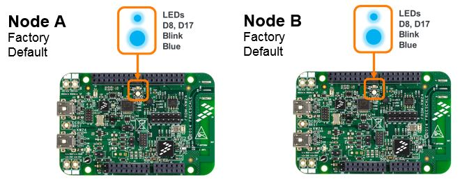
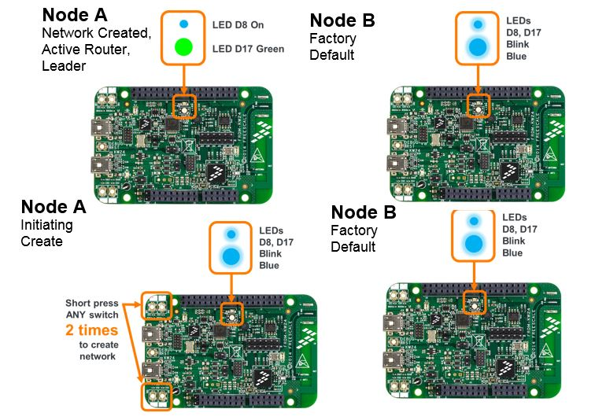
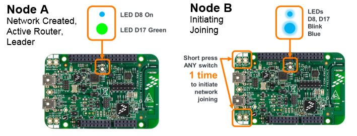
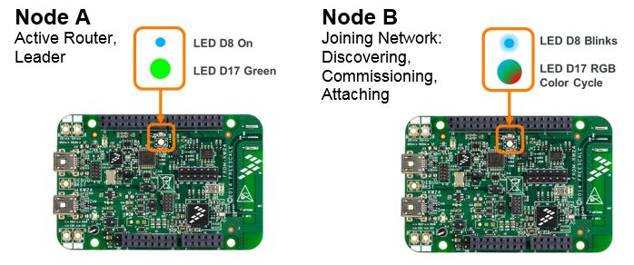
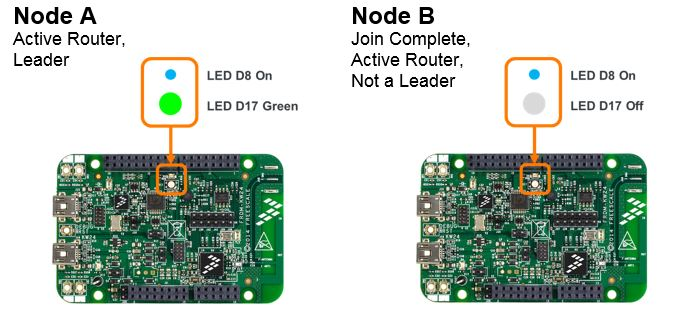
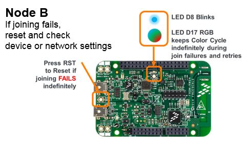

Note: the images used in the detailed steps assume using a FRDM-KW24D512 platform for Node A and Node B.
To join a new Thread network with a user initiated button switch action:

- On Node A: as shown in section Steps to Create a New Thread Network short press any board button switch 2 (two) times
- On Node A: verify network creation succeeds as shown in section Verifying Network Creation and Leader Role

- On Node B: Short press any board button switch 1 (one) time – any button switch initiates the action to discover and join an existing network

- On Node B: as the user initiates joining, the board LED state cycles to display ongoing progress for several seconds as Node B discovers networks in range, negotiates security with the Commissioner and the device attaches to the network after having received its credentials after successful commissioning

- On Node B: after a few seconds, if attaching to the network succeeds, Node B starts and requests a Router ID from the network Leader (Node A). If this succeeds and Node B becomes an Active Router in the same network as Node B, its LED state stabilizes

- On Node B: if the initial discovery and joining attempt to an existing
network does NOT succeed, the node retries joining indefinitely (shown by LED cycle)
until a network becomes open for joining or the user resets the node
